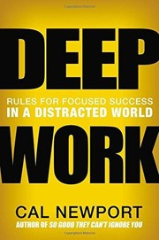
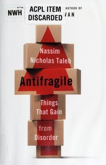

Software
Focus Cockpit
Prioridades, projetos e aprendizado em um espaço pessoal de trabalho. App desktop local-first.
Explorar →Construo ferramentas para organizar o trabalho, conectar sistemas e transformar informação em ação. Python, integrações com IA e projetos local-first, com atenção à confiabilidade.
Ver projetos → Currículo PDFPrioridades, projetos e aprendizado em um espaço pessoal de trabalho. App desktop local-first.
Explorar →
Organização e análise de oportunidades para construir software. Pipeline + interface de consulta.
Explorar →Exploração de IA aplicada ao conhecimento de manutenção. RAG + consulta contextualizada de documentos.
Explorar →Preparação e revisão de repositórios para publicação organizada, com verificações e governança.
Explorar →


Uma trajetória em construção: da base técnica da manutenção aeronáutica, passando por atuação independente, até automação, IA e software.